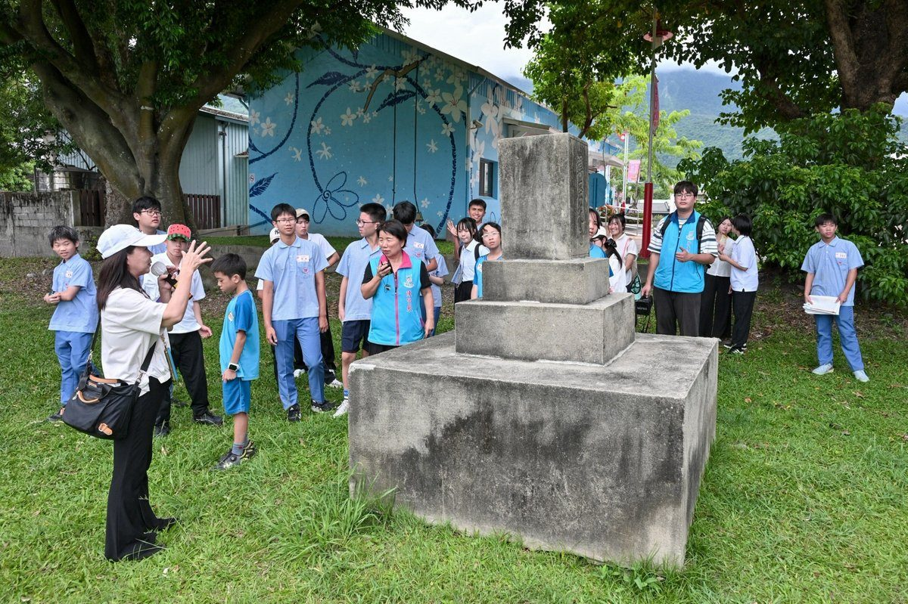

吉安花蓮迎北海道考察團 擴展產業深化國際情誼

可樂電子報小編/編輯
花蓮吉安鄉積極推動國際教育交流，日本北海道釧路町教育委員會教育長辻川尚志，近日率領十五人「青少年大使團」抵達吉安鄉。此行展開為期兩天的文化教育交流，不僅深入宜昌國中參與課程互動，更參訪好客藝術村，以此深化台日青年情誼。辻川尚志教育長也轉達了釧路町長小松町長對吉安鄉及鄉長游淑貞的誠摯問候，展現雙方友好關係。

吉安鄉長游淑貞親自迎接，並表示吉安鄉與釧路町自112年締結友好交流協定以來，已在教育、文化、觀光及經濟等多方面建立緊密互動。她強調，透過青年互訪不僅能拓展學生的國際視野，更能建立珍貴的跨國友誼，為兩地未來的交流注入長遠且豐沛的動能。此次交流活動首站於宜昌國中展開，學生們以管樂演奏及柔道表演展現青春活力，釧路町學生則分享日本文化與家鄉特色，雙方互動熱絡。

參訪團隨後體驗鳳梨酥、優格DIY，並透過網球、羽球、柔道、籃球及排球等社團活動，在文化與運動的互動中拉近彼此距離，留下難忘回憶。游淑貞鄉長在好客藝術村參訪時，致贈富含原住民文化特色的「情人袋」等紀念品，而釧路町青少年大使團則回贈畫作及地方特產，象徵著台日友誼歷久彌新。在吉野藝文館，醫師攝影家黎璧賢親自導覽「北國之春」北海道攝影作品，文觀所導覽人員亦帶領學生認識吉野神社鎮座紀念碑等歷史文化特色。鄉公所更安排參訪吉安鄉農會「山海正甜」，品嚐特色冰品與農特產品，讓參訪團留下深刻印象。

辻川尚志教育長表示，再次來到吉安鄉感到十分高興，他回顧今年一月宜昌國中赴釧路町交流時，學生們的優異表現令他印象深刻。他期盼藉由此次兩天的參訪，能進一步深化雙方情誼，持續推動教育交流合作。游淑貞鄉長出身教育界，深知國際交流對青年學子的重要價值，她感謝所有促成此次交流的單位與團隊，並期許學生們從交流中拓寬國際視野、增進文化理解，持續攜手深化合作，共同開創台日友誼的新里程碑。
▶ 延伸觀看
📺 相關報導影片：點此於 YouTube 觀看完整報導